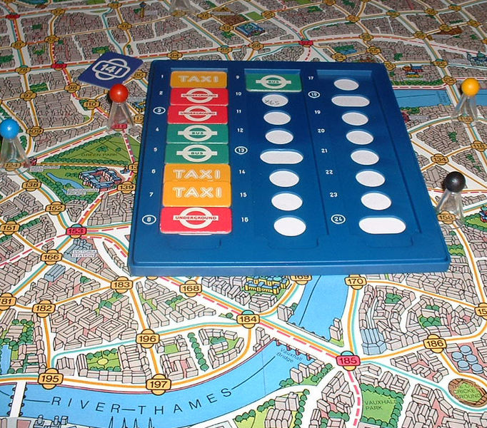

Winterthur Yard
WBE Projekt Präsentation
Raphael Spörri, Maja Fritschi, Florian Bosshard
Projektidee / Ziele
Scotland Yard
- Schnitzeljagd durch die Winterthurer Altstadt
- Graph entlang den Gassen der Altstadt
- Geolocation zur Ortung der Spieler
- Mister X kennt Koordinaten eines Geocaches
Demo
http://yard.prusik.ch
Open Street Map
The Free Wiki World MapJavaScript
Grundsätzlicher Aufbau map.js
var yard = {
map : null,
ownPositionMarker : null,
misterXCircle: null,
userPosition: null,
otherPlayers: new Array(),
initMap : function() {
// ...
}
}
$(document).ready(function() {
yard.initMap();
// ...
});
JavaScript
Geolocation
if (navigator.geolocation) {
navigator.geolocation.watchPosition(function(position) {
yard.userPosition = position;
}, function(error) {
// Fehler bei Geolocation
});
} else {
// Kein Geolocation im Browser
}
PHP
REST mit Slim
require '../lib/Slim/Slim.php';
\Slim\Slim::registerAutoloader();
$app = new \Slim\Slim();
$app->get('/graph/', function() {
getGraph();
});
$app->post('/login/', 'login');
function login() {
$request = \Slim\Slim::getInstance()->request();
$body = $request->getBody();
$requestData = json_decode($body);
addNewPlayer($requestData->name);
}
Tools


LaTeX
HTML Presentation Framework